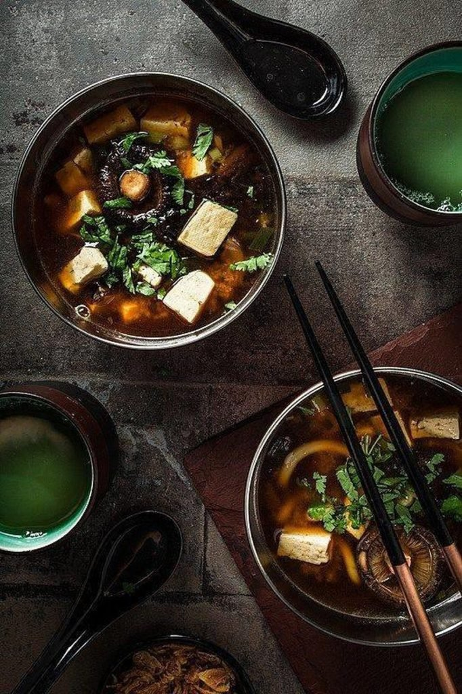
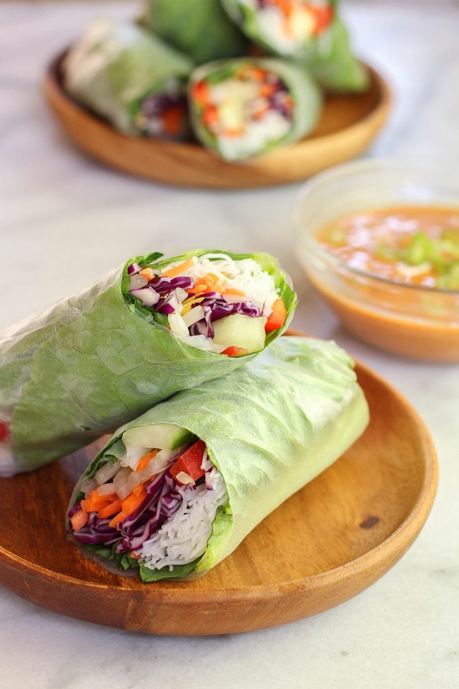
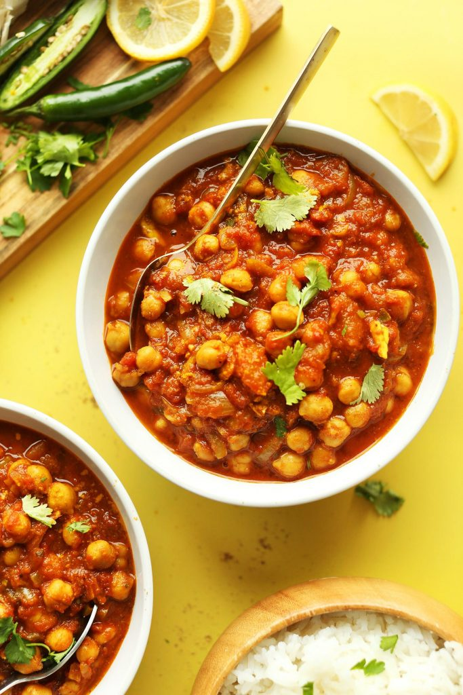
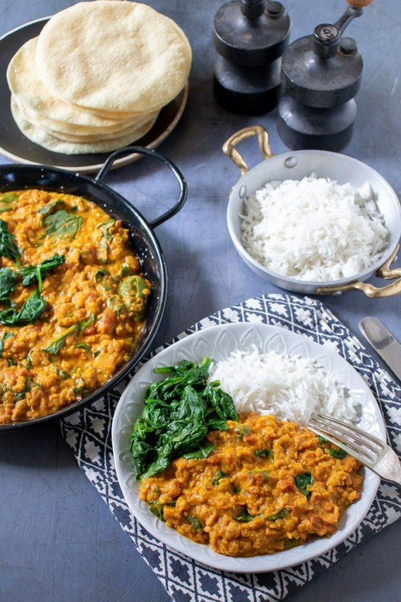
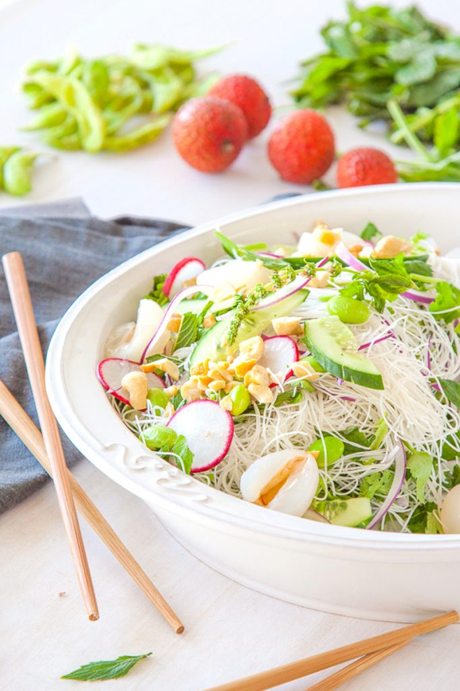
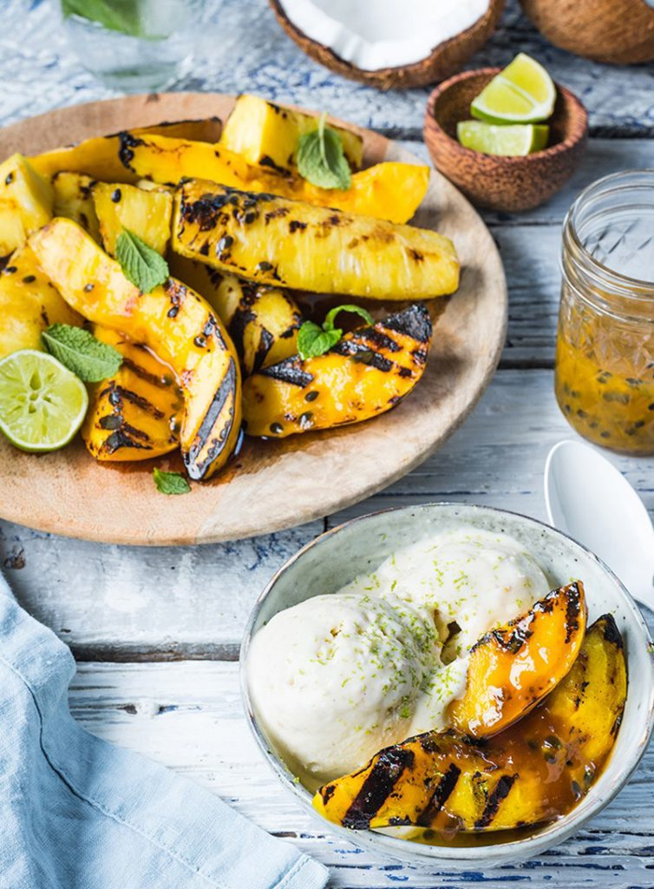
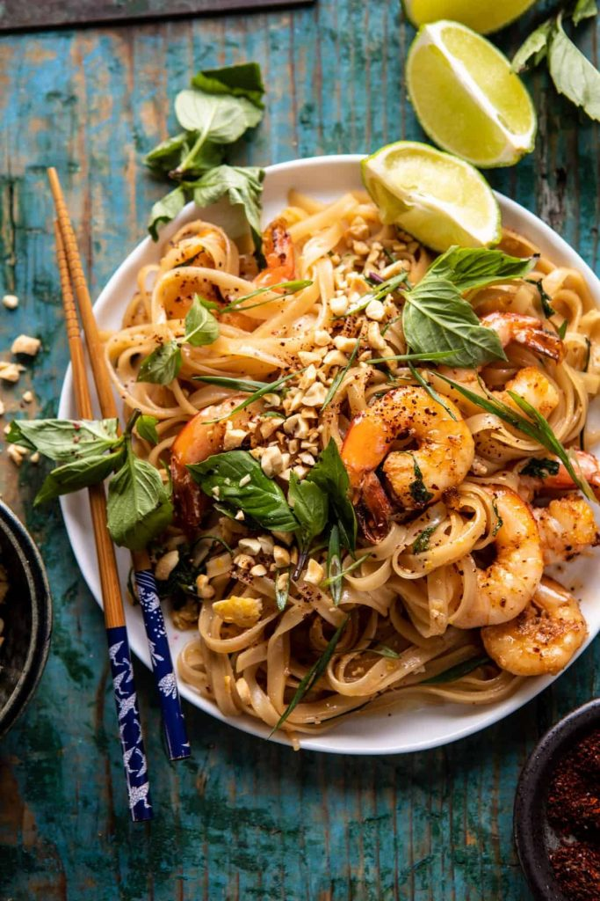
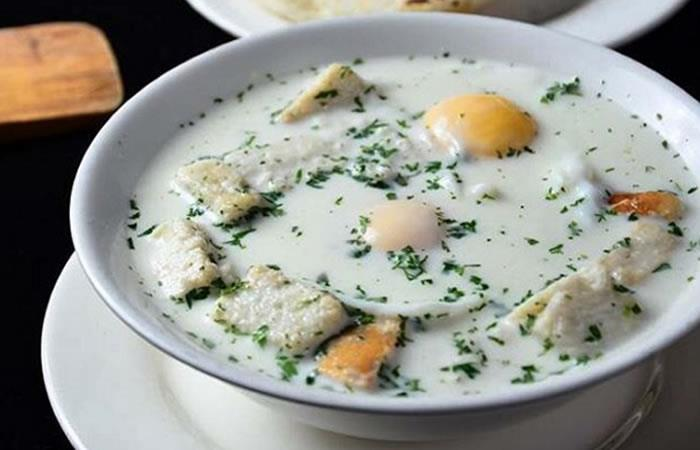
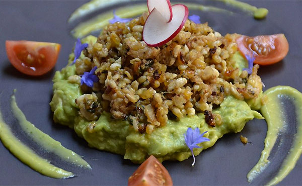

comida exoticas
platos y comidas artesanales
Raki_Daulat Restaurant
246 maravilloso del paraíso
Raki_Daulat@gmail.com
intagram
fasebook
comidas exóticas

Sopa de miso
El ingrediente principal de la sopa de miso es una pasta de miso especial hecha de soja fermentada. Básicamente, solo tiene que mezclarlo con agua caliente, luego agregar más agua caliente y hervir hasta que esté listo.
comidas exóticas

Rollitos de primavera
Los rollitos de primavera son muy ligeros ya que se preparan con papel de regalo de arroz, fideos de arroz y verduras frescas. En el interior puede tener diferentes rellenos, pero la idea general es mantener los rollitos de primavera livianos, usando verduras de hoja verde, fideos de arroz y verduras como zanahorias y pepinos. Lo mejor es servir los rollitos de primavera con una salsa sabrosa.
comidas exóticas

Chana Masala
Esta comida proviene de la India, así que prepárate para mucho sabor. Los ingredientes incluyen: cebolla, ajo, guindilla, jengibre, un montón de especias como cilantro, cúrcuma y pimienta negra y, por supuesto, garbanzos hervidos o enlatados. También puedes agregar algunos tomates a la mezcla.
¡Es ardiente y delicioso!
comidas exóticas

lenteja dahl
Otro favorito exótico de la India es el dahl. Se prepara con lentejas, especias y algunas verduras fritas (opcional). Esta podría ser la receta exótica más fácil de todas y es increíblemente saludable.
Ensaladas exóticas

Ensalada De Lichi Y Pepino
¡A veces, si quieres tener una comida exótica, solo necesitas algunas frutas exóticas! Esta ensalada fresca tiene un sabor absolutamente delicioso y es perfecta para los calurosos días de verano cuando ni siquiera puedes pensar en comer algo pesado durante el día.
Frutas exóticass

Frutas Tropicales a la Parrilla
Nada dice verano como el sabor de las frutas exóticas. Puedes comerlos frescos, por supuesto, pero también puedes convertirlos en un delicioso postre con un poco de esfuerzo. Pele y pique las piñas, los melocotones y los mangos frescos, luego áselos a la parrilla hasta que estén listos.
comidas exóticass

pad tailandés
También debe usar brotes de soja, cebolletas, cilantro, maní y azúcar morena para preparar este plato salteado. Las recetas difieren, por lo que puede elegir la que se ajuste a su presupuesto. Agregue tofu para un poco de proteína extra.
comidas exóticas

La changua
La Changua es un plato típicos Colombiano, que se prepara especialmente en el Altiplano Cundiboyacense en el centro del país. Se consume al desayuno y es una mezcla de agua y leche, con sal, huevo, cebolla y cilantro. Se deja hervir la leche con un poco de agua, se incorpora el cilantro y cebolla luego de haber sido picados, luego se añade sal al gusto, y los huevos que se dejan cocinar en el agua-leche. Es importante que la yema de huevo quede blanda en el proceso de cocción.
comidas exóticas

Escamoles
Los escamoles son conocidos también como el caviar mexicano. Son larvas de una especie particular de hormiga, este plato se consume principalmente en los estados de Hidalgo, Puebla de Zaragoza, Guanajuato y Tlaxcala. El costo de este particular ingrediente es sumamente alto, pues varia entre los 40 y 50 dólares por kilo.